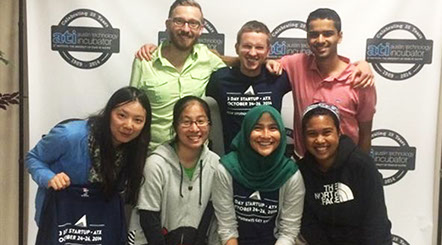
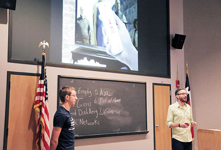

4/21/2015
This past weekend the Plot Guru team returned to where it all began. Well, sort of.
For the past five months Ethan and I have been helping to organize a weekend startup accelerator event here in Austin called 3 Day Startup. Last October I took Plot Guru through the 3DS program and had an amazing experience. In fact, had it not been for 3 Day Startup I may never have met several members of the current Plot Guru team.
So, as a tribute to the all of the new businesses that 3 Day Startup helped kick-start this past weekend, I thought I would put together a recap of last year’s 3DS and how the current Plot Guru team began to come together…
Back in the fall of 2014, after several months of seemingly endless market validation, networking, and refinement to the Plot Guru business plan and pitch materials, I decided that I needed to shift my focus to putting together a crack team to help me develop the Plot Guru application.
Based on a recommendation from some of Plot Guru’s early advisors, I decided to apply for 3 Day Startup, a startup accelerator program that helps student entrepreneurs kick-start their new ventures over a weekend. Despite my seemingly endless efforts over the previous eight months, I knew that a kick-start was exactly what Plot Guru needed.
I’ll spare you the details of the application process, but suffice it to say that I was (thankfully) accepted into the program with my idea for Plot Guru. The weekend was hosted by the Austin Technology Incubator and began with an introduction to the program and some brief seminars on how to make the most out of the next three days. Our cohort of about 50 students was then divided into small groups of 5-6 students where we were to pitch our business ideas for the first time.
When it was my turn to present Plot Guru, I delivered a 90 second barrage of market analysis, interview data, and business planning – a total brain dump of the last few months of work. Lucky for me, the other students in the room were all excited about the concept, so Plot Guru was quickly voted into the next (and final) round of pitch presentations.
The moment of truth. Would I be able to recruit a crack team of people to join me in making Plot Guru a reality? The final round of pitches were all very impressive, but after nerve-wrecking vote, our cohort was informed that Plot Guru had made the cut (by a healthy margin I might add).
Next up was the part I was most excited about: team selections. I knew I needed a group of people who were not only passionate about Plot Guru, but also had skills and knowledge that would round out the team. I can’t overstate how lucky I was that night to have been paired up with a group of incredibly smart, talented and motivated people that were just as excited about Plot Guru as I was. That group included several of Plot Guru’s current team, Ethan Dirks, Vivian Hu and Lu Lu, as well as several others who have since left to pursue their own ventures (Shout-out to Syairah, Parth, and Rachel!).
After our team came together we got set up in our “war room” and got to work. We decided that we needed to start by reviewing the entire Plot Guru business model – both to identify any weaknesses and to get the whole team up to speed on the work I had already done. It didn’t take long for us to identify some competitive challenges that we needed to address. In the end we made some tweaks to business plan and set the direction for our work over the next 48 hours.
Again, I’ll spare you all of the details of all of our late nights and early mornings, which were occupied by such things as completely remaking Plot Guru’s design, wire-framing the app, bolstering our market research, performing customer surveys, and gathering customer feedback through dozens of in-person interviews. I’m probably forgetting some things, but that’s what happens when you only get about 4 hours of sleep over the whole weekend. Startup life in all of its glory.
At the end of the week we presented Plot Guru to a panel of investors and entrepreneurs and received some great feedback and guidance on where to take the business next. We had momentum. We still do.
3 Day startup was a second beginning for Plot Guru and I’m so thankful that it provided me with the opportunity to connect with my team. We’re only one of many startups to have gone through the 3 Day Startup program, many of which have gone on to receive funding and develop into large, thriving organizations. I have no doubt that we’ll get there one day too.
- Justin
@JustinKey